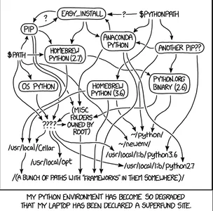

Là một non-tech data coder, mình vẫn loay hoay việc setup một dự án có thể được tái sử dụng và dễ dàng deploy, đặc biệt là với dự án dạng data - khi mà DS/DA sẽ làm việc nhiều với notebook - rất anti production.
Arggg! Cơn đau đầu của non-tech làm data, nguồn ảnh Analytics Vidhya

Mình tìm hiểu một số công cụ và dưới đây là so sánh:
Mamba ✅
Ưu điểm:
Nhanh hơn Conda nhiều lần
Tương thích hoàn toàn với Conda
Quản lý được cả Python và non-Python dependencies
Tích hợp tốt với notebooks
Poetry
Ưu điểm:
Dependency resolution tốt
Lock file chính xác
Nhược điểm:
Khó xử lý non-Python dependencies
Cần thêm setup cho notebook kernels
Không phù hợp lắm với data science
venv
Quá đơn giản cho data science
Không xử lý được dependencies phức tạp
Cần nhiều cấu hình thủ công
pipenv
Tương tự Poetry nhưng ít tính năng hơn
Không phù hợp với data science
uv
Mới và nhanh
Chưa đủ chín muồi cho data science
Thiếu nhiều tính năng cần thiết
Xem ra mamba có vẻ ổn nhất, hãy đào sâu hơn về ưu điểm của nó:
Xử lý dependencies phức tạp
Data science thường cần nhiều thư viện với dependencies phức tạp (numpy, pandas, scipy, pytorch…)
Mamba giải quyết dependencies nhanh và hiệu quả hơn Conda
Xử lý tốt các thư viện có binary dependencies (như CUDA)
Quản lý môi trường kernel cho notebooks
Tự động tích hợp với Jupyter notebooks
Dễ dàng switch giữa các môi trường trong notebook
Không cần cấu hình thêm cho notebook kernels
Oke giờ hãy thử xem làm thế nào để tổ chức phát triển một dự án với mamba - VS Code trên Window.
Hướng dẫn Cài đặt và Sử dụng Mamba với VS Code trên Windows
Bonus: nếu muốn import một module từ src trong notebook.ipynb thì làm thế nào?
Show the code
# Trong notebook của bạn (ví dụ notebooks/analysis.ipynb)# 1. Setup pathimport sysfrom pathlib import Pathproject_root =str(Path.cwd().parent)if project_root notin sys.path: sys.path.append(project_root)# 2. Import functionfrom src.processing.data_preprocessing import process_data, clean_data# 3. Sử dụng functiondf_processed = process_data(df_raw)
Với lưu ý:
Đảm bảo có file __init__.py trong mỗi thư mục Python
Không nên dùng relative imports (from ...src.processing) vì dễ gây lỗi
Nên đặt tên module và function theo PEP 8
Trong data_preprocessing.py nên có docstring mô tả function
Show the code
# src/processing/data_preprocessing.pydef process_data(df):"""Process the input dataframe. Args: df (pd.DataFrame): Input dataframe Returns: pd.DataFrame: Processed dataframe """# your code herereturn processed_df
Source Code
---title: "Data Science Project with Mamba, Python, and VS Code on Window"description: "In search for the best environment & dependencies management tool for data project"author: - name: "Tuan Le Khac" url: https://lktuan.github.io/categories: [python] image: mamba.pngdate: 11-04-2024date-modified: 11-04-2024toc: truecode-fold: trueformat: html: code-overflow: wrap---# Vì sao mà Mamba?Là một non-tech data coder, mình vẫn loay hoay việc setup một dự án có thể được tái sử dụng và dễ dàng deploy, đặc biệt là với dự án dạng data - khi mà DS/DA sẽ làm việc nhiều với notebook - rất anti production.:::: {.columns}::: {.column width="60%"}](meme_top.png):::::: {.column width="40%"}:::::::Mình tìm hiểu một số công cụ và dưới đây là so sánh:1. `Mamba` ✅+ Ưu điểm: - Nhanh hơn Conda nhiều lần - Tương thích hoàn toàn với Conda - Quản lý được cả Python và non-Python dependencies - Tích hợp tốt với notebooks2. `Poetry`+ Ưu điểm: - Dependency resolution tốt - Lock file chính xác+ Nhược điểm: - Khó xử lý non-Python dependencies - Cần thêm setup cho notebook kernels - Không phù hợp lắm với data science1. `venv`- Quá đơn giản cho data science- Không xử lý được dependencies phức tạp- Cần nhiều cấu hình thủ công4. `pipenv`- Tương tự Poetry nhưng ít tính năng hơn- Không phù hợp với data science5. `uv`- Mới và nhanh- Chưa đủ chín muồi cho data science- Thiếu nhiều tính năng cần thiếtXem ra `mamba` có vẻ ổn nhất, hãy đào sâu hơn về ưu điểm của nó:1. Xử lý dependencies phức tạp- Data science thường cần nhiều thư viện với dependencies phức tạp (numpy, pandas, scipy, pytorch...)- Mamba giải quyết dependencies nhanh và hiệu quả hơn Conda- Xử lý tốt các thư viện có binary dependencies (như CUDA)2. Quản lý môi trường kernel cho notebooks- Tự động tích hợp với Jupyter notebooks- Dễ dàng switch giữa các môi trường trong notebook- Không cần cấu hình thêm cho notebook kernelsOke giờ hãy thử xem làm thế nào để tổ chức phát triển một dự án với mamba - VS Code trên Window.# Hướng dẫn Cài đặt và Sử dụng Mamba với VS Code trên Windows## 1. Cài đặt Mamba trên Windows### Cách 1: Tải trực tiếp- Tải Mambaforge cho Windows từ: <https://github.com/conda-forge/miniforge#mambaforge>- Chạy file installer và làm theo hướng dẫn.### Cách 2: Dùng Windows Terminal/PowerShell```bashwget https://github.com/conda-forge/miniforge/releases/latest/download/Mambaforge-Windows-x86_64.exe -OutFile mambaforge.exestart /wait "" mambaforge.exe /InstallationType=JustMe /RegisterPython=0 /S /D=%UserProfile%\Mambaforge```## 2. Tích hợp với VS Code### Cài đặt Extensions1. Python (Microsoft)2. Jupyter (Microsoft)### Tạo và Cấu hình Môi trườngTạo file `environment.yml`:```yamlname: ds-projectchannels:-conda-forge-defaultsdependencies:-python=3.10-ipykernel-pandas-numpy-matplotlib-scikit-learn-jupyter```Tạo môi trường từ file:```bashmamba env create -f environment.yml```## 3. Cấu hình VS Code### Chọn Python Interpreter1. Mở Command Palette (`Ctrl + Shift + P`)2. Tìm "Python: Select Interpreter"3. Chọn môi trường Mamba vừa tạo### Cấu hình Notebooks- VS Code tự động nhận diện kernel từ môi trường Mamba- Kernel có thể được chọn ở góc phải trên của notebook## 4. Cấu trúc Project Đề Xuất```mdproject/│├── .vscode/ # VS Code settings│ ├── settings.json│ └── launch.json│├── data/│ ├── raw/│ └── processed/│├── notebooks/│ ├── 01_exploration.ipynb│ └── 02_analysis.ipynb│├── src/│ └── processing/│ ├── __init__.py│ └── data_processing.py│├── environment.yml├── .gitignore└── README.md```## 5. Cấu hình VS Code SettingsTạo file `.vscode/settings.json`:```json{"python.defaultInterpreterPath":"${env:USERPROFILE}\\Mambaforge\\envs\\ds-project\\python.exe","jupyter.notebookFileRoot":"${workspaceFolder}","python.analysis.extraPaths":["${workspaceFolder}/src"],"python.formatting.provider":"black","editor.formatOnSave":true,"ruff.enable":true,"ruff.format.args":["--config=pyproject.toml"],"ruff.lint.args":["--config=pyproject.toml"],"mypy.enabled":true,"mypy.configFile":"pyproject.toml"}```## 6. Cấu hình Development Tools### 6.1 Cài đặt Development DependenciesCập nhật `environment.yml`:```yamlname: ds-projectchannels:-conda-forge-defaultsdependencies:-python=3.10-ipykernel-pandas-numpy-matplotlib-scikit-learn-jupyter # Dev dependencies-black-ruff-mypy-pre-commit-nbqa-jupytext```### 6.2 Cấu hình pyproject.tomlTạo file `pyproject.toml`:```toml[tool.black]line-length = 88target-version = ["py310"]include = '\.pyi?$'[tool.ruff]line-length = 88target-version = "py310"select = [ "E", # pycodestyle "F", # pyflakes "I", # isort "UP", # pyupgrade]ignore = [][tool.ruff.isort]known-first-party = ["src"][tool.mypy]python_version = "3.10"warn_return_any = truewarn_unused_configs = truedisallow_untyped_defs = truecheck_untyped_defs = true[[tool.mypy.overrides]]module = [ "pandas.*", "numpy.*", "matplotlib.*", "seaborn.*"]ignore_missing_imports = true```### 6.3 Cấu hình Pre-commitTạo file `.pre-commit-config.yaml`:```yamlrepos:-repo: https://github.com/pre-commit/pre-commit-hooksrev: v4.5.0hooks:-id: trailing-whitespace-id: end-of-file-fixer-id: check-yaml-id: check-json-id: check-added-large-filesargs:['--maxkb=5000']-repo: https://github.com/psf/blackrev:24.1.1hooks:-id: black-repo: https://github.com/astral-sh/ruff-pre-commitrev: v0.2.1hooks:-id: ruffargs:[--fix]-id: ruff-format-repo: https://github.com/pre-commit/mirrors-mypyrev: v1.8.0hooks:-id: mypyadditional_dependencies:[types-all]-repo: https://github.com/nbQA-dev/nbQArev:1.7.1hooks:-id: nbqa-blackadditional_dependencies:[black==24.1.1]-id: nbqa-ruffadditional_dependencies:[ruff==0.2.1]```### 6.4 Cấu hình Git IgnoreTạo file `.gitignore`:```gitignore# Python__pycache__/*.py[cod]*$py.class*.so.Pythonbuild/develop-eggs/dist/downloads/eggs/.eggs/lib/lib64/parts/sdist/var/wheels/*.egg-info/.installed.cfg*.egg# Jupyter Notebook.ipynb_checkpoints*/.ipynb_checkpoints/*profile_default/ipython_config.py# VS Code.vscode/*!.vscode/settings.json!.vscode/tasks.json!.vscode/launch.json!.vscode/extensions.json# Environment.env.venvenv/venv/ENV/env.bak/venv.bak/.conda/conda-env/# Datadata/raw/*!data/raw/.gitkeepdata/processed/*!data/processed/.gitkeep*.csv*.xlsx*.xls*.db*.sqlite*.h5# Logslogs/*.log.hypothesis/.pytest_cache/.coveragehtmlcov/# OS specific.DS_Store.DS_Store?._*.Spotlight-V100.Trashesehthumbs.dbThumbs.db```### 6.5 Khởi tạo Pre-commit```bash# Activate môi trườngmamba activate ds-project# Cài đặt pre-commit hookspre-commit install# (Tùy chọn) Chạy pre-commit trên tất cả filespre-commit run --all-files```### 6.6 Extensions VS Code cho NotebooksCài thêm các extensions sau:1. "Jupyter Notebook Renderers"2. "Jupytext for Notebooks"3. "Black Formatter"4. "Ruff"5. "Mypy Type Checker"### 6.7 Cấu hình JupytextTạo file `.jupytext.toml`:```tomlformats = "ipynb,qmd"[formats]ipynb = {}qmd = {}```## 7. Pro Tips cho Windows### Path ManagementSử dụng `pathlib` để xử lý đường dẫn:```pythonfrom pathlib import Pathdata_path = Path("data") /"raw"/"file.csv"```### Git ConfigurationTạo file `.gitignore`:```gitignore# .gitignoredata/raw/*data/processed/*.ipynb_checkpoints/__pycache__/*.pyc```### Jupyter trong VS Code- Chạy cell: `Shift + Enter`- Variable explorer có sẵn- Plot viewer tích hợp- Intellisense hoạt động tốt### Debugging- Debugger tích hợp cho cả `.py` và `.ipynb`- Có thể đặt breakpoints trong notebooks## 8. Xử lý Lỗi Thường Gặp1. **Path quá dài trên Windows** - Sử dụng đường dẫn ngắn hơn - Kích hoạt hỗ trợ đường dẫn dài trong Windows2. **Conflict với môi trường Python khác** - Đảm bảo PATH được cập nhật đúng - Kiểm tra `where python` trong terminal3. **Jupyter Kernel không hiển thị** - Cài lại `ipykernel` - Kiểm tra jupyter kernelspec list## 9. Resources Hữu ích- [Mamba Documentation](https://mamba.readthedocs.io/)- [VS Code Python Documentation](https://code.visualstudio.com/docs/python/python-tutorial)- [Jupyter in VS Code](https://code.visualstudio.com/docs/datascience/jupyter-notebooks)## 10. Workflow Đề Xuất1. **Khởi tạo project mới**:```bash# Tạo và activate môi trườngmamba env create -f environment.ymlmamba activate ds-project# Cài đặt pre-commit hookspre-commit install```2. **Phát triển**:- Code trong VS Code với các extensions đã cài- Notebooks sẽ tự động được format bởi nbQA- Pre-commit sẽ kiểm tra code trước mỗi commit3. **Commit Changes**:```bashgit add .git commit -m"your message"# Pre-commit sẽ tự động chạy các checks```4. **Update Dependencies**:```bash# Thêm package mớimamba install package-name# Export environmentmamba env export > environment.yml```## Bonus: nếu muốn import một module từ `src` trong `notebook.ipynb` thì làm thế nào?```{python}#| eval: false# Trong notebook của bạn (ví dụ notebooks/analysis.ipynb)# 1. Setup pathimport sysfrom pathlib import Pathproject_root =str(Path.cwd().parent)if project_root notin sys.path: sys.path.append(project_root)# 2. Import functionfrom src.processing.data_preprocessing import process_data, clean_data# 3. Sử dụng functiondf_processed = process_data(df_raw)```Với lưu ý:- Đảm bảo có file `__init__.py` trong mỗi thư mục Python- Không nên dùng relative imports (`from ...src.processing`) vì dễ gây lỗi- Nên đặt tên module và function theo PEP 8- Trong `data_preprocessing.py` nên có docstring mô tả function```{python}#| eval: false# src/processing/data_preprocessing.pydef process_data(df):"""Process the input dataframe. Args: df (pd.DataFrame): Input dataframe Returns: pd.DataFrame: Processed dataframe """# your code herereturn processed_df```